Automatic Packet Reporting System
Automatic Packet Reporting System
SYMBOL UPGRADE 2014: We are beginning a new update process for the APRS symbol set. In May 2014, we added many new symbols for ships and aircraft to include submarines, torpedoes, Drones and Missiles, etc. In addition, Hessu, the author of APRS.FI announced at Dayton his effort to re-draw all symbols in a vector format so that they can be zoomed and expanded. Andrew of YAAC has expanded his symbols to include many of these overlay symbols. (more when available)...
The original APRSdos symbol set (shown several paragraphs below with black background) consisted of about 92 primary symbols and 92 alternates. Those symbols each had at least 8 color atributes for instant recognition of their immediate state. Unfortunately, the color atributes were dropped in many clients when they began to use Windows icons instead of rendered symbols. Those Windows ICONS used for many years are shown here:
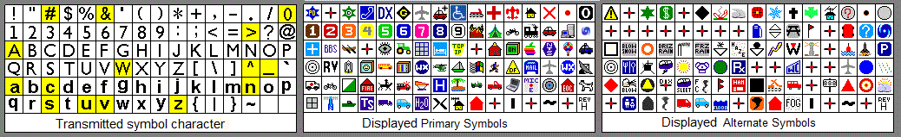
OVERLAYS: An optional overlay character could be applied over many of the original Alternates (those highlighted in yellow). Beginning around 2007 we suggested that the 36 overlay characters could also apply to any of the 92 alternates giving us over 3000 unique symbol opportunities. See: symbols-new.txt. These would be displayed on all existing clients as an overlay character on the basic alternate symbol, but clients could begin to draw additional unique images to represent these symbol/overlay combinations. Here is an example of how the original "Runner" symbol was expaneded to represent any number of special symbols for humans carrying APRS such as a Hiker, Skier, or with Baby-on-Board (proud parents). Another example is the House symbol expanded to show Power sources such as Battery, geothermal, Hydro, Solar and Wind plus the new Clubhouse symbol. To document these added overlay symbols a new table format was suggested below:
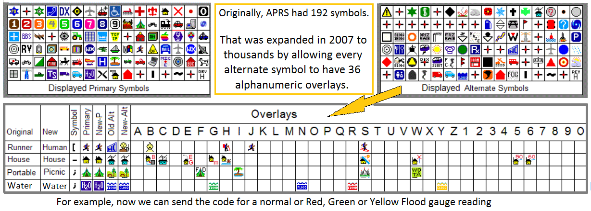
This set shows the original name and primary and alternate symbol as well as the proposed name change and new alternate base symbol (if needed). In this case the Wallcloud alternate symbol was moved over to a subset of Clouds to free up the 36 possible "Human" options. This new symbol set consits of then 92 lines as shown above, each with the definition columns on the left and then a sparse set of columns showing any unique symbols defined for the overlays. These 92 lines are broken up into four blocks just like the original APRSdos listings. That is, the 16 symbols using punctuation, the 16 symbols using the numeral area of the ASCII table, the 32 upper case symbols and the 32 lower case symbols.
For example, now we can send the code for a GREEN, RED or YELLOW Flood gauge, or can create a symbol for a water stop if someone came up with a nice graphic.
Dead-Reckoning: Without the original dead-reckoning included in the original APRSdos, many APRS map displays have lost the original real-time freshness that was intended for APRS displays. Many systems today do not display even the fundamental COURSE/SPEED leader on each symbol that shows not only which direction it is headed, but how fast. Also, many systems do not keep moving-objects moving. This is also a fundamental of APRS due to its sparse sharing of a busy channel. No one has the luxury of high-rate reporting, so the receive and display systems were supposed to keep objects moving between updates. This is called Dead Reckoning and you can see the effect on 5 of the moving mobles in the APRS dos example further down the page.
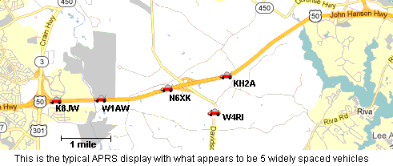 . . .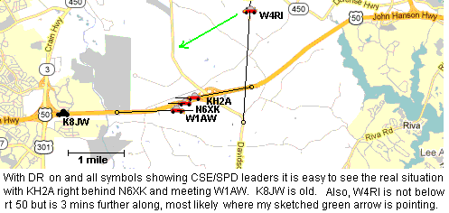
In the two images above, it is easy to see how the typical non-DR'ed symbols without CSE/SPD leaders give very missleading real-time information. While the proper display on the right shows which objects are current, which are old, and where they most likely are located. Further, the presence of the "anchor circle" makes it easy to see that these symbols have been DR'ed and about how much time has elapsed since their last update.
I ask all authors to include this fundamental APRS display function in their creations. It was added to APRS.FI in 2013 and is very valuable for seeing realtime activity.
Symbol Expansion 2007: There was a major SYMBOL Expansion Proposal in October 2007. This proposal re-aligns several weather symbols, to free up several alternate symbol blocks which can then each have up to 36 overlay expansions greatly expanding the APRS symbol set to 3200 or more. Now in 2014 we are beginning to take advantage of this expansion (see first paragraphs above). Please review these documents. This substantial expansion of the alternate symbol set to include overlays on ALL alternate symbols is called APRS SYMBOLS 1.2.
Current SYMBOLS SPEC
(version 1.1 plus non conflicting parts of 1.2). .
New version 1.2 symbols with new expandable Overlay blocks
Priority Bit. Now (Aug 09) a lower case overlay character implies a PRIORITY position or object packet
UI-View latest symbol file
APRS v 1.2 Expanded Overlays on all symbols in 2007.
As long as new software developers recognize both the old and the new alternate weather symbols the new APRS1.2 Symbol set will work with little confusion.
APRS SYMBOL ATTRIBUTES: One of the most important aspects of APRS is the display of tactical information on maps using symbols for each station. Each such SYMBOL has several ATTRIBUTES that convey additional meanings. In the original APRS, these additional attributes were displayed with COLORS and circles. Some new software has taken a more simplistic approach and simply usees fixed color ICONS but without any displayed attributes. Thus, the users of these systems are blind to attribute information on their maps without having to click on each one... This operator intensive masking of important information does not do justice in some cases to the original intent of APRS information display to the end users.
The image below is a screen capture of the APRSdos F1-HELP-SYMBOLS screen showing the user all of the different symbols available. All of those shown in White can display most of the additional symbol attributes by their color. (This image has not been updated recently).
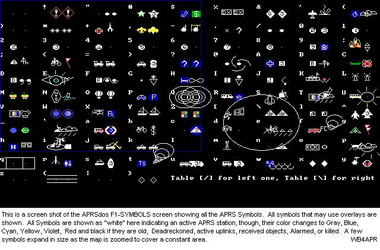
This next image is an extracted subset showing those symbols that can be overlayed with 0-9, A-Z (Aug09 - and now lower case a-z). In this example, they all have the overlay character "3". As of 2007, in APRS1.2 all secondary or alternate symbls can have an overlay. If not placed on the symbol itself, they can be displayed to the upper left as shown in the new RADIO symbol below. New in August 09, the overlay character may be transmitted in lower case. This bit-change indicates a priority position packet which may be used in the future for traffic management. See priority bit page.
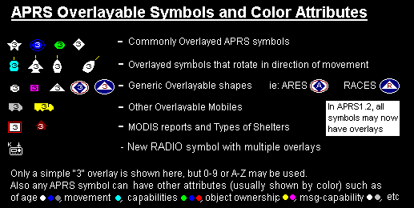
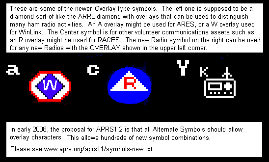
ATTRIBUTE TYPES: All of the symbols shown above are in WHITE which is the representation of the symbol when it is transmitted by a fully capable APRS platform, usually meaning it can send and receive messages. For example, if the station is a dumb-tracker with no message capability then it is displayed in GRAY. The following table describes all of the SYMBOL ATTRIBUTES in APRS and the color used in most cases to convey them on the map. This list is in ascending order meaning you start at the top and assign any color that applies. The last color applied is the one that sticks.
NOTE: Nothing requires authors to have multi-color symbols to convey these additional attributes, but no matter how it is presented, these Symbol ATTRIBUTES are important information about a SYMBOL on an APRS map that should be conveyed somehow graphically to the user (without him having to take action to view it)..
ACTIVITY BIT: . This bit was proposed in the year 2000 time frame to make it easy to quickly select a map showing only stations that have an operator present. Since no consensus was found, this feature was moved to the APRS1.2 addendum. . The key features of this activity bit are:
EXAMPLES: The below APRSdos screen capture displays a number of these features using 12 identical stations or objects all using the CAR symbol. Note how valuable these attributes are to conveying quick meaning to the participants in an event. It conveys at a glance, who is moving, who is old, who is an object, what you are responsible for, and many other important variables associated with the real-time tactical display.
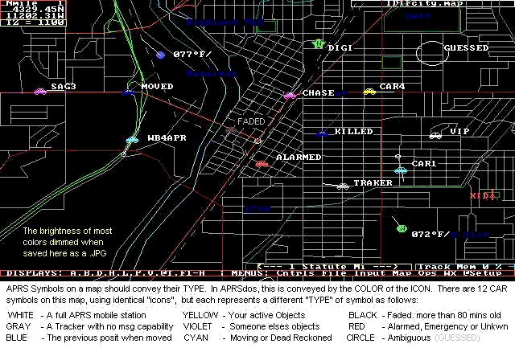 was
{kind=link}
Notice how CAR1 and WB4APR have been deadreckoned since more than a minute has passed since their last positions came in. Therefore their last known position is marked with what I call their "anchor circle" and then the Symbol has been moved to where they could be now based on their last known course and speed.
IGate Identification: Since Igates occasionally use a symbol other than the GATE with an Overlay "I", they can also be distinguished by their periodic IGATE Status packet. APRSdos, UI-View and WinAPRS use this to draw a circle or other distinguishing attribute so that these stations can be clearly identified.
Ambiguity Plots: . Since not all positions in APRS are known to the same precision, a significant attribute of all APRS symbols is the provision to show the four ranges of ambiguity of 0.1, 1, 10 and 60 nautical miles. . Notice how the object named GUESSED above is not shown with a symbol, but with a circle. This is because this station is transmitting or entered with a 1/10th mile ambiguity with his position. The station's symbol does show up at large area scales, but once you zoom the map below the scale at which the size of the ambiguity is larger than the "size" of the symbol, then the symbol disappears so that there can be no missinterpretation by the person viewing that there is precision where there is not. These ranges of ambiguity are conveyed just like a written position is conveyed. If a position is only known to the nearest degree (60 nm), then only the degrees are sent. . If the position is only known to the nearest minute, then only the degrees and integer minutes are transmitted. . and So on down to Tenths of a minute. If all digits are known, then the position conveys the full precision inherent in APRS which is to the nearest 100th of a nautical mile or about 60 feet.
Ambiguity in the Spec: . There has been lots of confusion over Position Ambiguity caused by the poor wording in the spec that can be incorrectly interpreted as implying a truncation of digits and a lat/long box of ambiguity. . It is not a truncation and it is not a box. . The position field in APRS is a string field, not a numeric field. . One should place in that field by inclusion only the digits the sender wants the receiver to use. . Further the spec implies that this results in a box of ambiguity. . This is wrong. because it would imply vastly different sizes of inprecision at the equator and at the poles. . It is clear that the intent of position ambiguity was a range in nautical miles, since Ambiguity was defined in the LATITUDE field only, where the digits do correspond to Nautical Miles. . And they do give the same circular area everywhere on earth.
Plotting Position Ambiguity: . The recommended plot of position ambiguity is shown above for GUESSED. . That is, a circle with a radius of the ambiguity centered on the given position. (Not centered in a box of LAT/LONG) . Further, the symbol may be displayed as long as the size of the symbol is larger than the circle of ambiguity. But on higher resolution zooms, when the size of the circle becomes larger than the size of the symbol, then the symbol should NOT be displayed because it implies a location at the center which is incorrect. Only the circle should be displayed at these zooms. . Further, the "center" location of this circle should be slightly randomized (say within half the range of ambiguity) so that if there are many stations reporiting the same location and ambiguity, that all of their circles will show. . These circles are not intended to be precise sizes or edges of ambiguity, but simply a graphical representation to the viewer that these positions are not well known.
Vicinity Plots: Vicinity plots are special cases of the ambiguity plots where the receiving software has received a packet from a new station for which it has no position information. In order to add this station to the APRS system, the software creates a temporary position called a "Vicinity" plot. This position is assigned a random position within 1 mile of the first digipeater in his path. The randomness is so that multiple such Vicinity Plots can be shown. The position actually is given a 10 mile ambiguity so there is no confusion by casual observers. Also, the Vicinity plot symbol is a big question mark and the callsign is NOT shown on the map unless "clicked-on". . When a valid position is eventually received, then the vicinity plot is replaced with the new position. . See an example plot.
{kind=link}
Parsing Symbol Attributes: Determining the "attribute" of a given symbol to display is the result of some simple parsing of the various APRS position fields as shown below:
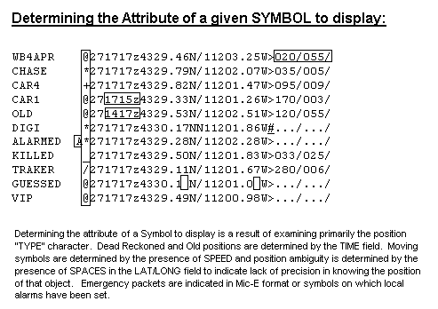
Some have said that it is impossible in Windows to display these attributes using ICONS, but I would think it would be easy to paint a background circle with the color and then place the ICON on it as shown below:
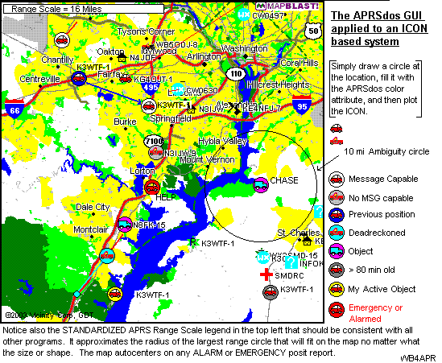
SYMBOLS versus ICONS: APRS symbols were not intended to be fixed-sized/color "icons" but were intended to be whatever it took to best represent the "thing" being represented. The Hurricane symbol is an example as shown below. It is very large and covers a very large area.
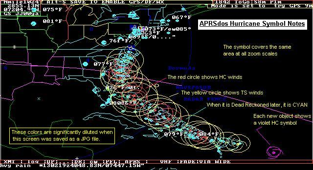
The Hurricane symbol covers hundreds of square miles and it expands or contracts at all range-scales (zooms). The twister symbol is shown at the lat/long of the reproted hurricane, but then a red circle is shown at a radius of the reported Hurricane force winds and a yellow circle shows the area covered by tropical storm winds. Further, these circles are offset by the vector sum of the wind speeds and the speed of movement of the storm so that the danger quadrant is bigger than the leward quadrant. As you can see, no one can miss the presence of the Hurricane, nor the area impacted by its winds. Several other symbols in APRSdos vary with map range scale so that the area covered is constant, such as Grid Squares, DX spots, and maybe others. I wish I had had coding room so that Thuderstorms and most other weather objects did the same...
AREA OBJECTS: . Another class of large symbols in APRS are the AREA Objects. These are Boxes, Circles, or triangles that can be drawn on the map from any scale from about 500 feet across to 800 miles across. THey can be any of the 16 primary colors and they can be just outlines of filled. THough caution should be used with the FILLED objects, because they can mask all map features underneath them. Here is an XASTIR plot of some examples:
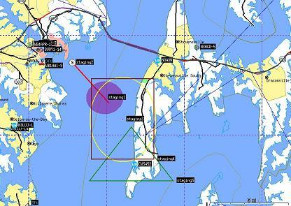
Click for full size.
Its curious why the filled circle is a true circle, yet the "staging3"
non-filled yellow circle is painted as an oval.
{kind=link}
The latest current SYMBOLS LIST is maintained up-to-date on that web page.
Just as a frame of reference, it is also interesting to look at the frequency of usage of the more popular symbols put together by James Jefferson. See ( Icon usage data).
{kind=link}